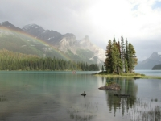

Monument Valley Navajo Tribal Park
|
2007 Summer Vacation
 TX→UT→TX TX→UT→TX
June 10-July 1
328 photos
Highlights: Monument Valley, Valley of the Gods, Arches, Canyonlands, Goblin Valley, Capitol Reef, Bryce Canyon, Cedar Breaks, Grand Canyon, Zion
Camera: Panasonic DMC-FZ5 (E)
|

Mount Rushmore National Memorial
|
2008 Summer Vacation
 TX→SD→WI→TX TX→SD→WI→TX
July 11-29
151 photos
Highlights: Scotts Bluff, Mount Rushmore, Badlands, Devils Tower, Black Hills, Jewel Cave, Wind Cave, Custer, Pipestone
Camera: Panasonic DMC-FZ5 (E)
|

Yellowstone National Park
|
2009 Summer Vacation
 TX→WY→TX TX→WY→TX
July 10-August 1
282 photos
Highlights: Yellowstone, Grand Teton
Camera: Canon SX10 IS (F)
|

Yosemite National Park
|
2010 Summer Vacation I
TX→CA→TX
May 29-June 13
261 photos
Highlights: White Sands, Joshua Tree, Sequoia, Kings Canyon, Yosemite, Tucson, Caverns of Sonora
Camera: Canon SX10 IS (G)
|

Split Rock Lighthouse State Park
|
2010 Summer Vacation II
TX→WI→TX
July 16-27
109 photos
Highlights: Lake Superior North Shore, St. Louis
Cameras: Canon SX10 IS (G), Panasonic DMC-FZ5 (H)
|

Grand Teton National Park
|
2011 Summer Vacation
TX→ID→TX
June 24-July 19
329 photos
Highlights: Grand Teton, Yellowstone, Snake River, Craters of the Moon, Minnetonka Cave, Fossil Butte, Flaming Gorge, Capulin Volcano
Cameras: Canon SX10 IS (G), Panasonic DMC-FZ5 (H)
|

Copper Harbor Lighthouse
|
2012 Summer Vacation
TX→MI→TX
July 7-29
217 photos
Highlights: Wisconsin Dells, Lake Superior North Shore, Keweenaw Peninsula
Cameras: Canon SX10 IS (G), Panasonic DMC-FZ5 (H)
|

Lone Cypress
|
2013 Summer Vacation
TX→CA→TX
June 5-29
366 photos
Highlights: Yosemite, San Francisco, 17-Mile Drive, Sonora Pass, Devils Postpile, Mono Lake, Bodie, Death Valley, Sedona, Tucson, Kitt Peak
Cameras: Panasonic DMC-FZ5 (H), Canon SX40 HS (I), Canon SX10 IS (K)
|

Battleship Texas State Historic Site
|
2013-14 Winter Break
TX→FL→TX
December 26-January 3
53 photos
Highlights: Miami, Battleship Memorial, San Jacinto Battleground
Cameras: Panasonic DMC-FZ5 (H), Canon SX40 HS (I)
|

Jefferson Memorial
|
2014 Spring Break
 AUS→ATL→DCA→ATL→AUS AUS→ATL→DCA→ATL→AUS
March 8-13
95 photos
Highlights: Air & Space Museums, Marine Corps Memorial, Air Force Memorial, Lincoln Memorial, Jefferson Memorial, Arlington Cemetery, WWII Memorial, Korean Memorial, Vietnam Memorial, MLK Memorial, FDR Memorial
Camera: Canon SX10 IS (K)
|

Glacier National Park
|
2014 Summer Vacation
TX→MT→WI→TX
June 28-July 29
408 photos
Highlights: Air Force Academy, Glacier, Yellowstone, Beartooth Highway, Chief Joseph Highway, Theodore Roosevelt, St. Louis
Cameras: Canon SX40 HS (I), Canon SX10 IS (J), Panasonic DMC-FZ5 (L)
|

Sedona
|
2014-15 Winter Break
TX→AZ→TX
December 27-January 5
99 photos
Highlights: Tucson, Prescott, Jerome, Sedona, Mt. Lemmon
Cameras: Canon SX40 HS (I), Panasonic DMC-FZ5 (L)
|

Hanging Lake
|
2015 Summer Vacation
TX→CO→TX
June 28-July 9
167 photos
Highlights: Mesa Verde, Durango & Silverton Narrow Gauge Railroad, Million Dollar Highway, Black Canyon of the Gunnison, Hanging Lake, King's Row Cave, Denver
Cameras: Canon SX40 HS (I), Canon SX10 IS (J), Panasonic DMC-FZ5 (L)
|

Palo Duro Canyon State Park
|
2015 Winter Break
TX→NM→TX
December 18-22
56 photos
Highlights: Albuquerque, Palo Duro Canyon
Cameras: Canon SX40 HS (I), Canon SX10 IS (J), Panasonic DMC-FZ5 (L)
|

Enid A. Haupt Garden
|
2016 Spring Break
AUS→ORD→DCA→BOS→AUS
March 12-17
94 photos
Highlights: Washington Monument, Haupt Garden, Capitol, National Zoo, Roosevelt Island, Old Town Alexandria, Arlington Cemetery
Cameras: Canon SX40 HS (I), Canon SX10 IS (M)
|

Glacier Bay National Park
|
2016 Summer Vacation I
 AUS→SFO→YVR AUS→SFO→YVR
 YVR→Seward YVR→Seward  →Denali →Denali  →ANC →ANC
ANC→SEA→AUS
June 11-22
209 photos
Highlights: Vancouver, Inside Passage, Ketchikan, Misty Fjords, Juneau, Skagway, Glacier Bay, Denali
Cameras: Canon SX10 IS (M), Canon SX60 HS (N)
|

Peninsula State Park
|
2016 Summer Vacation II
TX→WI→TX
July 16-25
95 photos
Highlights: Lake Tomahawk, Door County
Cameras: Panasonic DMC-FZ5 (L), Canon SX60 HS (N)
|

Maroon Bells-Snowmass Wilderness
|
2017 Summer Vacation
TX→CO→TX
July 12-24
126 photos
Highlights: Paint Mines, Rocky Mountain, Maroon Bells, Hanging Lake
Cameras: Panasonic DMC-FZ5 (H), Canon SX10 IS (M), Canon SX60 HS (N)
|

Rocky Mountain National Park
|
2018 Spring Break
TX→CO→TX
March 11-18
109 photos
Highlights: Carlsbad Caverns, Rocky Mountain
Cameras: Panasonic DMC-FZ5 (H), Canon SX60 HS (N)
|

Sturgeon Bay Canal North Pierhead Lighthouse
|
2018 Summer Vacation
TX→WI→TX
July 19-29
128 photos
Highlights: Milwaukee, Door County
Cameras: Panasonic DMC-FZ5 (H), Canon SX60 HS (N)
|

Bayside Marketplace
|
2018-19 Winter Break
TX→FL→TX
December 26-January 2
65 photos
Highlights: Miami, Jacksonville, New Orleans
Camera: Canon SX720 HS (O)
|

Banff National Park
|
2019 Summer Vacation
TX→AB→TX
June 28-July 28
654 photos
Highlights: Mt. Evans, Hell's Half Acre, Beartooth Highway, Yellowstone, Great Falls, Waterton Lakes, Banff, Jasper, Yoho, Glacier
Cameras: Canon SX10 IS (M), Canon SX60 HS (N), Canon SX720 HS (O)
|

Pictured Rocks National Lakeshore
|
2020 Summer Vacation
TX→MI→TX
July 11-27
207 photos
Highlights: Lake Superior South Shore, Door County
Cameras: Canon SX10 IS (M), Canon SX60 HS (N), Canon SX720 HS (O)
|
 Compilations
Compilations
|

Jasper National Park
|
Dave's Faves
2005-2020
483 photos
|

Glacier National Park
|
Glacier National Park
July 2-12, 2014
July 6 & 19-24, 2019
327 photos
|

Lake Superior
|
Great Lakes Region
July 17-21, 2010
July 16-25, 2012
July 19-22, 2016
July 24-27, 2018
July 13-24, 2020
551 photos
|

Arlington National Cemetery
|
Washington, D.C.
March 8-13, 2014
March 12-17, 2016
181 photos
|

Yellowstone National Park
|
Yellowstone National Park
July 20-28, 2005
July 13-27, 2009
June 27-July 7, 2011
July 12-20, 2014
July 3 & 24-26, 2019
653 photos
|

Yosemite National Park
|
Yosemite National Park
June 3-5 & 7-9, 2010
June 9-15, 2013
276 photos
|
|
NOTES
|
- Pictures are original digital material, no editing has taken place except for resizing and cropping
- Pictures are displayed in chronological order
- Pictures are displayed at the rate of 20 per minute
|
|
|